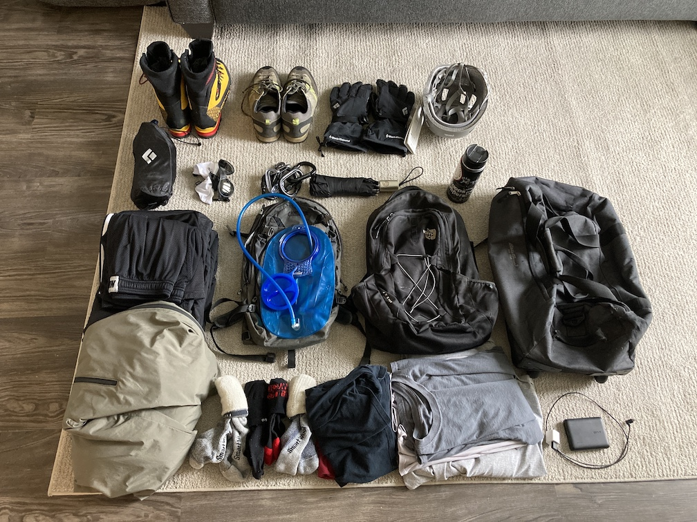

Mount Hood trip report from 23-26 April 2021.
There were four of us: myself, my cousin (A), cousin-in-law (M), and cousin-in-law’s friend (J). A has zero mountaineering experience, but a bit of general climbing. M has fairly substantial climbing experience and some mountaineering experience. J has substantial mountaineering experience. I have zero snow-based mountaineering experience (I’ve summited Mt. Elbert and Quandary Peak in Colorado, but both are simply steep scrambles with no ropes nor technical equipment needed).
We got to Timberline Lodge at the base of Mt. Hood around 11:00am on Saturday, 24 April. We practiced some glacier travel skills and headed back to the hotel to set up ropes and our packs. Here I learned the double fisherman’s knot, butterfly, bowline (which I learned many, many years ago and have forgotten since, minus the bunny and tree part!), and Prusik. With the gear ready, dinner was had at the nearby Mt. Hood Brewing before promptly going to sleep in preparation for an 11:00pm start time. (For the unaware reader, mountain climbs generally start very early to avoid icefall and rockfall later in the day.)
A note on the weather: for the week prior to us arriving, it was beautiful. Clear skies, no precipitation, snowpack was excellent. But as soon as we got there, everything turned to shit. At the bottom of Hood, it was raining and mushy out. Driving up changed things. Flurries started to form, first in small, random clusters, and finally becoming a constant barrage against the truck’s windshield. We kept an eye on multiple forecasts, until finally it was reported (forecasted) that there would be a six-hour time window of clear, no precipitation, haul-your-ass-up-quickly conditions starting at—you guessed it—11:00pm.
The alarms all sounded simultaneously and we were up. Gear was put on and everything loaded into the truck of anticipation of not making it back in time for 11:00am check-out. The 15-minute drive was done in complete silence, ending in us arriving in a barren parking lot, an omen of what was to be found on the mountain. Remaining gear (helmet, harness, etc) was donned and off we went.
I’ve had achilles issues for many years now, and they tend to get exacerbated after either long bouts of running or excessive uphill movement on my feet, the latter of which includes hiking up the slopes of Mt. Hood. I immediately felt both of my achilles tendons begin to get sore and agitated, to the point that I didn’t think I would be able to last an hour, much less the six or so that we expected it would take to summit. I diverted my attention using conversation, which worked long enough to let them warm up and allow the issue to go away.
The snowpack varied significantly throughout the climb with no apparent rhyme or reason. Some stretches were hardpack with no give whatsoever, while others caused us to sink a solid 6-12 inches! Note to self: find out why this is... my guess is something to do with the underlying terrain. I was in position two, so I simply followed J’s footsteps, making it a lot easier on myself and the others. We continued climbing up and up and up, never getting reprieve from the rather steep incline nor the westwardly wind carrying sharp snowflakes that assaulted our (well, at least mine) exposed cheeks and forehead. After gaining around 1000 ft of elevation, J gave us 15 minutes for the weather to get better or else we were to turn around: it would only get worse and more dangerous and miserable the further up we went. (I, for one, wanted to keep pushing to at least the top of the ski lift.) A few hundred vertical feet later we turned around and headed back down.

Navigation was a bit tricky. The team had compasses and a GPS, both of which we checked every so often on the way up and down, but due to the limited visibility, it was still difficult finding the exact path to take. Our footsteps were promptly covered up with the wind.
We got back to the truck, drove home, and finished our interrupted slumber from earlier.
Due to our being cheapskates and opting for the cheapest flights available, moving the evening flight times up wasn’t an option, so we opted to head back to the base of Mt. Hood and practice crevasse rescue. Here we saw the Prusiks in action, learned how to set up a 3:1 pulley system, tied a few clove hitches, and worked on snow protection methods (fluke and T trench).
We spent the drive back listening to 90s music and being annoyed that the sun was starting to just poke out.
After dropping the other three off for their flight, an old colleague/friend picked me up and we met up with a second old colleague/friend—both of whom I haven’t seen in 2-3 years—at Von Ebert Brewing in the Pearl District in downtown Portland. I had the Volatile Substance and Drink Me Potion, along with a grilled chicken sandwich. Good laughs, good conversation, good times all around.
Both flights home (Portland to Seattle, Seattle to Dallas) were uneventful. I got back to my apartment at 6:30am on 26 April, just in time for my daily morning meeting and without any suspicion I had just traveled halfway across the country and back over the weekend.
With gear in general, I tend to run pretty lean/minimalist. I would prefer to be uncomfortable than have to get something that is not absolutely necessary. After all, if Muir could summit all the peaks he did without the help of down jackets and three pairs of specialized gloves, why can’t we? (This does not apply to safety-related items, which I am happy to spend money on, as it decreases risk for both myself and the team as a whole.)
On the other hand, comfort is often related to safety in the mountains. Warmth = not cold = no hypothermia. Extra clothes = non-wet clothes = no hypothermia. And so on. There is a balance to be struck between non-essential comfort, safety, and personal philosophy (read: stubbornness?).
Glacier glasses are especially important. Snow reflects sunlight well, which can easily sunburn the eyes. Yes, you read that correctly. Yes, it is reportedly as painful as it sounds. I bought the Oakley Clifden: they are pretty comfortable and provide all-around coverage. There are plenty of cheaper options that provide like coverage. Just ensure the lenses are polarized and nothing “leaks” through the sides.
Trekking poles are pretty sweet and take a good amount of load off of the legs. I climbed with one in one hand and my ice ax in the other, switching as I needed to.
This goes without saying, but physical prep is incredibly important, especially sport-specific work, the prime (gym-based) example being step-ups with boots and a loaded pack. (Of course, hiking up an actual hill with identical terrain to the target mountain is preferable, but when you live in Texas, you gotta make do with what you got.) While my specific preparation wasn’t insane, I think it prepared me fairly well based on the 1:30 hr of climbing we did and how easy it was.
Strength endurance:
Endurance:
The two aspects of my fitness that need work in regards to mountaineering are my achilles and core strength in regards to loads on the back. I’m working with a minimalist shoe for running and plan to load a pack for step-ups or the oh-so-awesome, yet oh-so-dreaded StairMaster.
Otherwise, just more step-ups, more StairMaster, or more weight (or a potent mix of all three, we shall see). Mountain Tactical’s Peak Bagger program is a seemingly solid resource for its stated goal of “build[ing] strength and stamina into your legs required for a hard, fast push to a peak in a single day or two”.